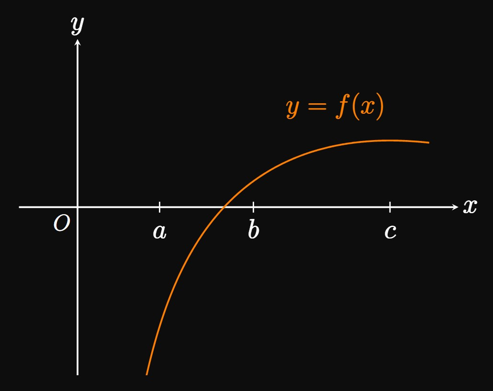

The graph of \(y = f(x)\) is shown in
Figure 6.
The initial approximation \(x_1\) is selected to be either \(a,\) \(b,\) or \(c.\)
For which choice of \(x_1\) does Newton's Method fail?

For each of exercises 2–4, use two iterations of Newton's Method with the given initial approximation to estimate the function's zero.
Let \(f(x) = x^5 + x + 1.\)
Use Newton's Method to approximate, correct to four decimal places,
the values of \(c\) that satisfy the Mean Value Theorem for \(f\)
on \([-1, 1].\)
Using Newton's Method for the equation \(x^2 - a = 0,\)
show that \(\sqrt a\) is approximated by the algorithm
\[x_{n + 1} = \frac{1}{2} \par{x_n + \frac{a}{x_n}} \pd\]
Then use this formula to calculate \(\sqrt{500}\)
correct to four decimal places.
Determine the interval of starting approximations \(x_1\)
such that Newton's Method yields invalid approximations for the zero of \(f(x) = 1 + \ln x.\)